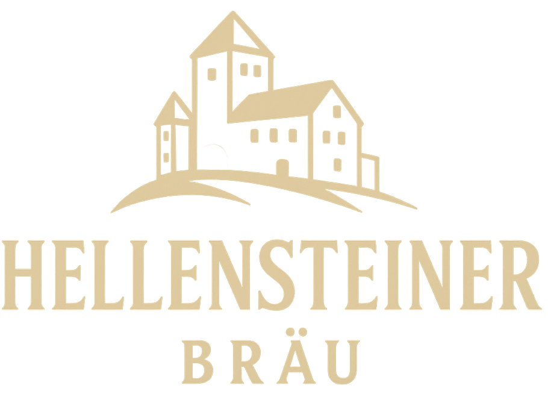
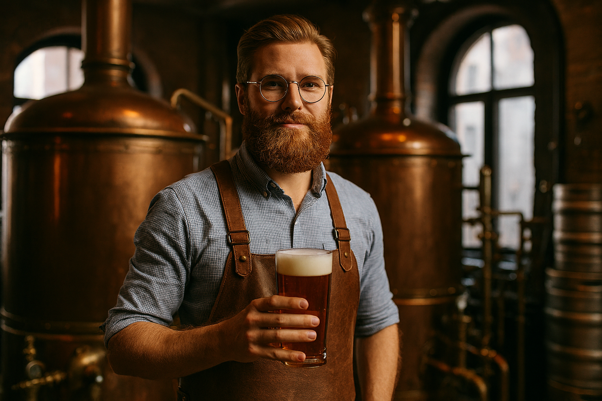
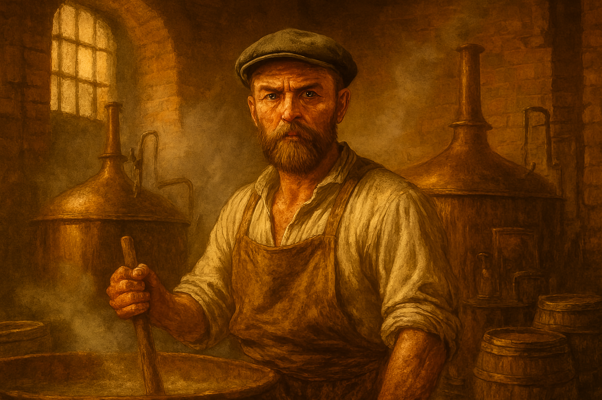
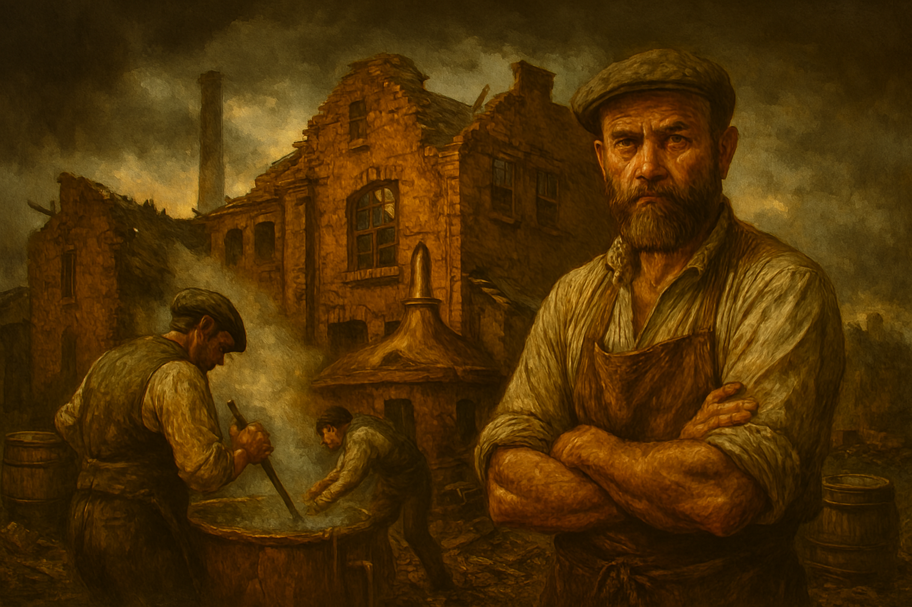
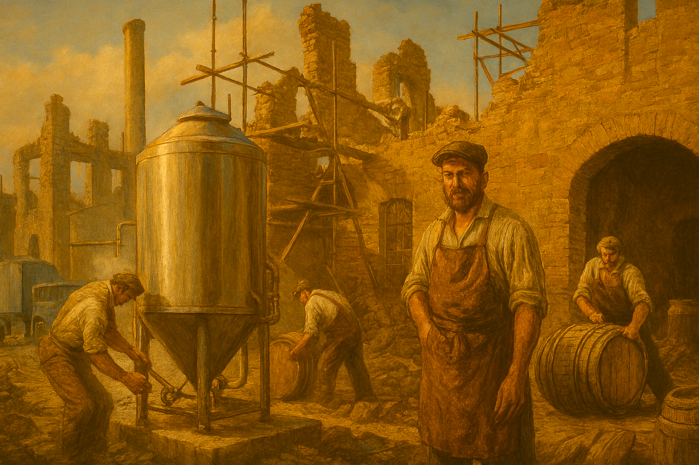
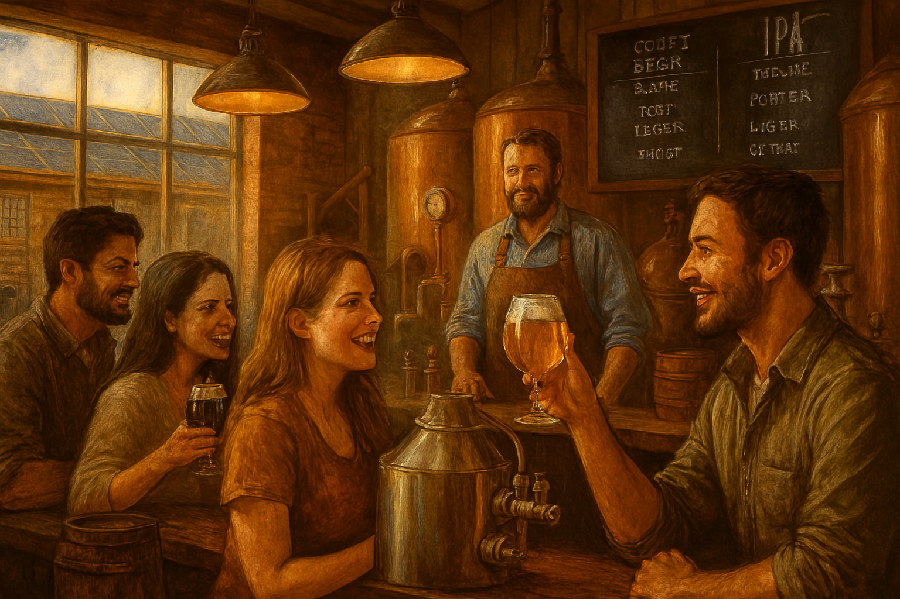

Im Jahr 1846, als die ersten Dampflokomotiven durch das württembergische Hügelland schnauften und die Industrialisierung langsam die Dörfer erreichte, saß ein junger Mann namens Johann Benedikt Hellenstein in der Stube seines Elternhauses am Fuße der gleichnamigen Burg. Er war Müller, Tüftler und leidenschaftlicher Bierliebhaber – und er hatte eine Vision: ein Bier, das nicht nur den Durst stillt, sondern die Seele wärmt.Johann war fasziniert von der Kunst des Brauens. Er experimentierte mit Hopfen aus Tettnang, Gerste von den Feldern rund um Heidenheim und dem klaren Quellwasser aus dem Brenztal. Nach vielen Versuchen gelang ihm ein Sud, der so ausgewogen war, dass selbst der örtliche Pfarrer nach der Messe ein Krüglein verlangte.

Im Jahr 1846 begann unsere Reise mit einer kleinen Brauerei am Rande eines malerischen Dorfes.
Mit nichts weiter als Leidenschaft, handwerklichem Geschick und dem festen Glauben an die Kunst des Bierbrauens wurde das erste Fass angestochen.
Der Duft von frisch gemälztem Getreide und der würzigen Hopfenaromen erfüllte die Luft – ein Zeichen dafür, dass hier etwas Besonderes entstand.
Was als bescheidene Braustube begann, wurde bald zum Treffpunkt für Freunde, Nachbarn und Reisende.
Jeder Schluck erzählte von harter Arbeit, von Geduld und von der Liebe zum Detail.

Die ersten Jahre waren nicht einfach: Schwankende Rohstoffpreise, technische Herausforderungen und harte Konkurrenz stellten unsere junge Brauerei immer wieder auf die Probe.
Doch jede Herausforderung stärkte unseren Willen, weiterzumachen.
Eines Nachts, im Herbst des Jahres 1853, traf uns ein schwerer Schlag ein Brand brach in der Braustube aus.
Innerhalb weniger Stunden standen Kessel, Fässer und Vorräte in Flammen. Für einen Moment schien all die Arbeit, all die Leidenschaft der vergangenen Jahre verloren.
Doch die Menschen des Ortes hielten zusammen. Nachbarn, Freunde und sogar ehemalige Konkurrenten eilten herbei, halfen beim Löschen und beim Wiederaufbau.

Nach schwierigen Zeiten wagten wir den Wiederaufbau. Mit Mut, Entschlossenheit und einem klaren Blick in die Zukunft erhoben wir uns aus der Asche.
Neue Technologien, modernisierte Brauanlagen und das unermüdliche Engagement unseres Teams ließen die Brauerei erneut erblühen.
Jeder Stein, der gesetzt, jedes Fass, das gefüllt wurde, stand sinnbildlich für unseren Glauben an das, was uns schon immer angetrieben hat: die Liebe zum Brauhandwerk.
Doch bei aller Modernisierung blieb eines unverändert unser Herz für Qualität und Tradition.
Wir verfeinerten unsere Rezepturen, ohne ihren ursprünglichen Charakter zu verlieren. Die handwerkliche Sorgfalt, die schon unsere Gründer ausgezeichnet hatte, blieb das Fundament, auf dem wir weiter aufbauten.

Mit innovativen Rezepturen und modernen Methoden revolutionierten wir das Brauhandwerk.
Neue Biere, neue Geschmacksrichtungen – wir kombinierten Tradition mit Innovation und setzten Maßstäbe für die Zukunft des Brauens.
Dabei blieb unser Ziel stets dasselbe: Bier nicht nur zu produzieren, sondern es erlebbar zu machen – mit Charakter, Seele und einer Geschichte, die man in jedem Schluck spürt.
Unsere Braumeister experimentierten mit regionalen Zutaten, besonderen Hopfensorten und neuartigen Brauverfahren.
So entstanden Sorten, die nicht nur den Geschmack, sondern auch die Vorstellung davon, was Bier sein kann, erweiterten.
Jedes neue Rezept war ein mutiger Schritt und zugleich eine Hommage an das handwerkliche Können unserer Vorfahren.